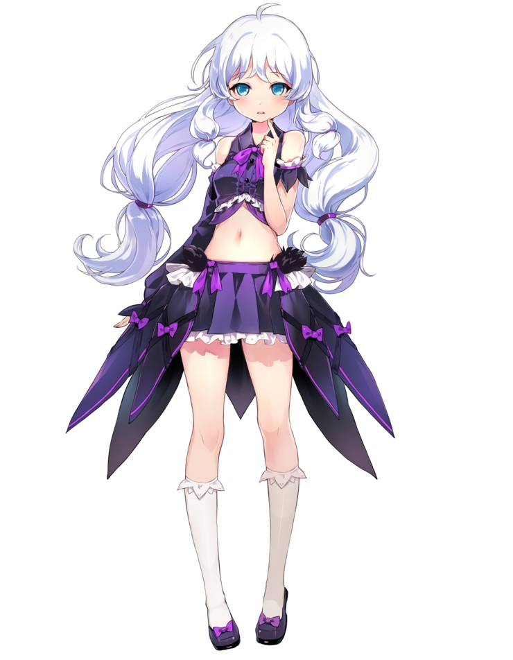
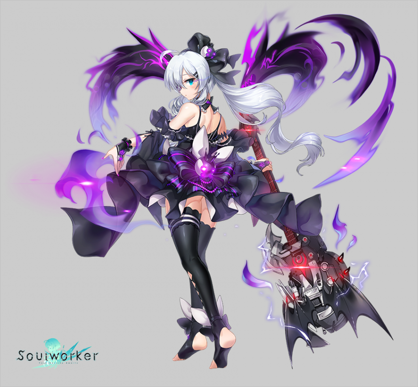

스텔라 유니벨
스텔라 유니벨

슬픔의 하울링기타
소녀의 눈에는 이상한 것이 보였다.
사람도 아닌, 동물도 아닌, 그렇다고 물체도 아닌 특별한 것들이 보였다.
그것이 보통 사람 눈에는 보이지 않는, 자신의 눈에만 보이는 것들이라는 걸 알아차리는 데에는 오랜 시간이 걸리지 않았다. 소녀는 그것이 마냥 신기하고 기뻐 그것들에게 노래를 불러주었고, 그것들은 자신들에게 호의적인 소녀를 아끼고 사랑하게 되었다.
소녀는 무심코 이 일을 자신의 부모와 주위 사람들에게 말했다.
그때부터, 소녀를 바라보는 주위의 시선이 달라졌다. 그 시선의 정체가 두려움이라는 것을 알아차리는 데에도 오랜 시간이 걸리지 않았다.
소녀는 부모에게서, 세상에게서 고립되기 시작했다. 외로움은 언제나 소녀를 따라다녔고, 소녀는 그럴 때마다 노래를 불렀다.
그리고 세상이 바뀌었다.
하늘에 열린 불길한 빛은 세상을 모두 집어삼키는 듯했다.
소녀의 주위 사람들은 불길한 아이가 재앙을 몰고 왔다고 여겨, 소녀에게 돌을 집어 던졌다.
소녀는 슬펐다. 너무나 슬퍼 견딜 수가 없었다. 그래서 소녀는 더더욱 노래를 불렀다. 목이 갈라지고, 힘이 다할 때까지 노래를 불렀다.
그리고 소녀의 노랫소리는, 세상을 집어삼킨 소용돌이가 뿜어내는 소리에 집어삼켜졌다.
소녀는 지금까지 누군가를 이해할 수도 이해받지도 못했기 때문에 보통 사람과는 다른 삶을 살아왔다.
그래서 누군가는 마이페이스라고도 부르고, 또 누군가는 백치미라고도 불렀다. 하지만 그런 엉뚱한 소리는 누구와도 친해질 수 없었던 소녀가 영혼들과 교감을 나누며 살아온 삶의 방식이었다.
소울웨펀은 기타를 사용함
